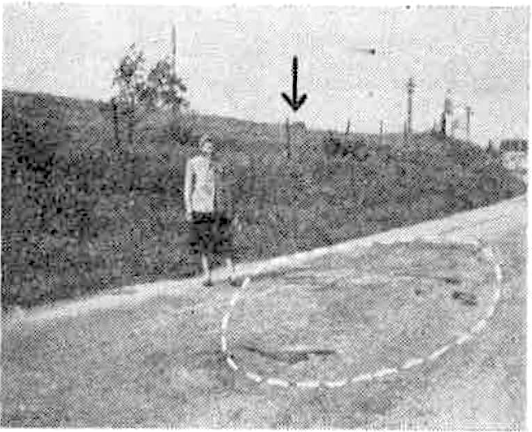

À Vins-sur-Caramy (Var),
Palalda (Pyr.-Or.) et Beaucourt-sur-Ancre (Somme). - Trois "petits êtres" sont observés au sol. - Onze témoins
oculaires établissent ta réalité des faits. - Les phénomènes physiques constatés peuvent apporter des éléments
importants à l'étude de la propulsion des O.V.N.I.
Lorsqu'en mars dernier, nous annoncions comme vraisemblable la continuation , et sur un mode
spectaculaire, des apparitions d'"objets volants non identifiés" (v. dernier numéro d'Ouranos), nous ne pensions pas
que les événements nous donneraient si vite raison et qu'à trois reprises, dès le 14 avril, puis le 22 avril et le 10
mai, il nous serait donné d'enquêter nous-mêmes sur des faits qui compteront parmi les plus significatifs qll'il nous
aura été permis jusqu'ici de connaître.
La presse s'est fait l'écho de deux de ces faits, survenus le premier à Vins, le troisième à Beaucourt. Le second, à Palalda, nous a été communiqué directement par les témoins oculaires ; la gendarmerie, les services aéronautiques et la presse ont été avisés par nos
soins.
Les récits publiés par les journaux - chacun a pu le constater - présentaient des divergences importantes sur des
points essentiels, qui rendaient indispensables des enquêtes techniques entourées de toutes les garanties voulues et
aussi longues qu'il était nécessaire.
Les premiers résultats de ces enquêtes ont été étudiés par le Comité d'Etude de la C.I.E.
OURANOS au cours de ses deux dernières réunions. Examens et analyses se poursuivent à l'heure actuelle.
Sans attendre, nous publions ci-après, dans leur ordre chronologique, les premiers rapports relatifs à ces trois
affaires.
1. Vins-sur-Caramy (Var), 14 avril 1957
Enquêteur : Jimmy Guieu, chef du Service d'enquête de la C.I.E. OURANOS.
Assistant : M. Pierre AYRAUD, ingénieur du son au studio de Radio Monte-Carlo.
Témoins oculaires : Mme Marie GARCIN, Mme Julia RAMI, M. Jules Boglio, tous trois habitant Vins-sur-Caramy.
Le dimanche 14 avril, à 15 heures, Mmes Garcin et Rami se
promenaient sur la mme D.24, à 1 kilomètre environ à l'est de Vins-sur-Caramy. Soudain, à une centaine de metres de
leur position, atterrit sur la route un curieux engin métallique (couleur métal mat) en forme de cône, la pointe
dirigée vers le bas. L'objet ressemblait un peu à une grosse toupie (sommet convexe) : hauteur maxima, 1,50 m :
diamètre maximum, 1 mètre environ. Perpendiculairement aux parois du cône se trouvaient des tigelles d'aspect
métallique animées de vibràtions rapides.
À l'instant où l'engin manœuvrait pour se poser, les témoins entendirent un vacarme assourdissant. Ce bruit -
"métallique" - était produit par un panneau signalisateur routier (n° 1 du croquis ci-dessus) situé à 5 mètres
environ du point d'atterrissage et qui oscillait et vibrait brutalement.
Mmes Rami et Garcin, effrayées, poussèrent ensemble un cru de stupeur succédant immédiatement au vacarme. Alerté
par ce tumulte et ces cris, M. Jules Boglio qui. à 300 mètres de là donnait des soins à
un rûcher dans la colline, se précipita, croyant à un accident d'automobiles. C'est alors qu'il vit l'engin décoller
et perçut de nouveau les étranges vibrations métalliques. Le "cône" fit un bond au-dessus de la route, décrivit un
virage (vers, l'est, à 5 ou 10 metres de hauteur maximum) et alla se poser une seconde fois dans un petit chemin, à
200 mètres environ de son premier point d'atterrissage.
A : 1er atterrissage. B : 2e atterrissage. Panneaux n° 1 et 2 : Deviation magnétique. Panneau n° 3 : Pas de déviation.
Vanne d'irrigation : Déviation magnétique. En
médaillon : schéma de l'engin, avec ses tigelles périphériques (animées de vibrations), d'après la description des
témoins.
Lors de son virage, il survola un second panneau signalisateur (n° 2 du croquis), lequel fut, à son tour, soumis à
de brutales oscillations et à des vibrations produisant un bruit, une "résonance" extrêmement importante. Durant les
évolutions de l'objet, les trois témoins virent très nettement les panneaux vibrer, tout comme s'ils
avaient été soumis à de violents chocs répétés à une cadence rapide.
Ensuite, l'engin décolla, tanguant bord sur bord. et s'en fut, toujours silencieusement, vers le sud-est,
à une vitesse modérée. À aucun moment l'engin lui·même ne fit du bruit. L'observation complète avait duré environ
une minute.
Mme Rami avertit son mari, garde-champêtre, qui, bientôt, en compagnie de la
gendarmerie de Brignoles, se rendit sur les lieux ; à l'emplacement du point
d'atterrissage. La gendarmerie constata que la terre (sur le bord de la
route) semblait avoir été violemment "balayée" sous l'effet d'un souffle puissant. Sur le chemin de terre battue
(deuxième atterrissage) les traces étaient plus nettes encore : terre "chassée" sur un diamètre d'environ 1 metre à
1,50 m.
, en compagnie de M. Pierre Ayraud, ingénieur du son au studio de Radio Monte-Carlo, je
me rends à la gendarmerie de Brignoles (Var). Sur
présentation de ma carte d'enquêteur de la C.I.E. Ouranos, l'adjudant me fit
obligeamment prendre connaissance de son rapport d'enquête. Il appert d'emblée que les témoins sont non seulement de
bonne foi, mais aussi au-dessus de tout soupçon de supercherie.
Ne pouvant m'accompagner à Vins, l'adjudant me remit un mot
d'introduction pour M. Ventre, maire de Vins. Arrivés à 15 heures
au village (à 9 km au nord-est de Brigneles), nous ne pûmes prendre contact avec le
maire, absent. Je me mis alors en quête des témoins et interrogeai les villageois. Mes questions jetèrent un froid !
Nul ne savait (ou ne voulait dire) où ceux-ci se trouvaient ! Après quelques minutes de recherche dans les rues du
village, la nouvelle de notre arrivée àvait fait fuir "ceux qui savaient". Les autres se contentant de nous regarder
avec suspicion... En substance, irrités par la presse, la radio et la télévision, depuis quarante-huit heures, les
témoins avaient "pris le maquis" dans la collirie proche ! M. Boglio travaillant ce
jour-là au fond de la mine de bauxite n'avait nul besoin, lui, de se cacher...
Vins-sur-Caramy. - En haut : Des touristes examinent les lieux de l'atterrissage. - En bas :
Jimmy Guieu, ayant à sa droite M. Pierre Ayraud, ingénieur du son au studio de Radio
Monte-Carlo, interroge Mme Garcin et Mme Rami. - Dans
le médaillon : Jimmy Guieu enregistre la déviation magnétique d'un des poteaux indicateurs
proches de l'endroit où s'est posé l'"objet". Cliché Le Provencal,
Marseille
Durant notre "chasse aux témoins", une voiture Citroën à traction avant stoppa sur la place du village. L'adjudant
de gendarmerie de Brignoles, suivi d'un brigadier
et d'un gendarme, en descendit, venant... superviser mon enquête. D'emblée, le brigadier me déclara péremptoirement,
que l'engin en question - "téléguidé" - venait certaintement de la base de l'île du Levant. Je m'inscrivis en
faux contre cette affirmation, alléguant qu'aucune nation ne possédait d'aéronef mu silencieusement.
J'expliquai en outre au brigadier que si les poteaux signalisateurs avaient, vibré avec un tel vacarme à proximité
de l'engin, cela provenait peut-être du fait qu'ils avaient été pris dans son champ magnétique propulseur.
Scepticisme général. J'offris alors de rechercher s'il existait sur place des rémanences magnétiques.
Sceptiques, mais intrigués, mes interlocuteurs aquiescèrent.
Notre "4 CV" suivant leur "traction avant", nous arrivâmes à l'emplacement du premier atterrissage, sur la route
D.24. Là, en présence des gendarmes qui, sur ma demande, surveillèrent attentivement mon expérience, j'approchai ma
boussole contre la carrosserie de la "4 CV" et fis constater l'amplitude de la déviation de l'aiguille : trois à
quatre degrés maximum. Ensuite, j'allai poser ma boussole à l'endroit exact de l'atterrissage : résultat négatif,
point de rémanence magnétique au sol.
Par contre, à 5 mètres de là, le panneau signalisateur (n° 1 du croquis) fit faire un bon à l'aiguille de la
boussole (approchée à 5 cm), marquant ainsi une déviation de 15 degrés ! (Rappelons que la masse de la
Renault n'avait fait dévier l'aiguille que de 3 à 4 degrés.) J'invitais le brigadier à procéder personnellement à la
même expérience : résultat identique à celui que j'avais obtenu.
Un instant plus tard, nous suivîmes sur la route la "ligne de survol" de l'engin qui, à cent mètres de là, environ,
passait au-dessus d'un autre panneau signalisateur (n° 2 du croquis). Ce panneau (indiquant Brignoles) était
également "magnétisé" et faisait dévier de 15 degrés
l'aiguille de la boussole. Par contre, un troisième panneau, situé six ou huit mètres plus loin (indiquant Vins-sur-Caramy),
lui, n'offrait aucune trace de magnétisation et ne
déviait pas l'aiguille de la boussole ! Ce test négatif, mettant clairement en évidence la magnétisation des deux autres panneaux, stupéfia les
gendarmes. Ceux-ci, une fois encore procédèrent à des vérifications à l'aide de la boussole : conclusion identique.
Nous traversâmes la route et nous engageâmes sur le petit chemin de terre battue où l'engin s'était posé une
seconde fois. Aucune rémanence magnétique au sol. Par
contre, une vanne (0,40 m de côté) d'irrigation, en fer (rouillée), ouvrant dans le ruisseau (à sec) révélait un magnétisme faisant dévier de 15 degrés l'aiguille de
la boussole, à l'instar des panneaux 1 et 2. L'engin s'était d'ailleurs posé à seulement 1 mètre ou 1,50 m de la
vanne, au maximum. Ces tests successifs contrôlés par le brigadier, l'adjudant et le gendarme sont importants,
notamment l'absence de magnétisme sur le panneau qui,
précisément, n'avait pas été soumis aux vibrations comme les autres. Ce fait semblerait indiquer une rémanence magnétique causée par l'engin ; à la
rigueur, une neutralisation par cet engin du magnétisme propre du troisième panneau. Seule une
étude approfondie de ces constatations permettra de confirmer s'il s'agit d'un phénomène magnétique naturel ou d'une rémanence
consécutive à l'atterrissage.
Revenu au village, grâce à la présence des gendarmes, je pus rencontrer le garde-champêtre, M. Rami. Celui-ci,
rassuré sur mes activités d'enquêteur (il ne voulait à aucun prix avoir - de nouveau - affaire à un journaliste !),
accepta d'aller chercher sa femme et Mme Garcin cachées dans la colline ! C'est ainsi
que je pus - enfin ! - interroger ces témoins oculaires. Notre entretien fut enregistré sur magnétophone par
l'ingéneur du son, M. Pierre Ayraud, et diffusé le soir-même (17 avril), à 19:08, sur la chaîne de Radio
Monte-Carlo.
N.B. - Contrairement à ce que la presse régionale annonça, la DST ne
s'est pas occupée de cette affaire. Le 17 avril au matin (avant mon départ), la
DST m'indiqua que seule la police de l'Air s'en occupait. Je pris alors contact avec la police de l'Air, où
l'inspecteur Rochu me confirma la chose, précisant qu'un correspondant de Draguignan se
rendrait sur les lieux. Ce correspondant effectua l'enquête le 18 avril, soit quatre jours après l'événement.
Je tiens à signaler la dilligence et l'objectivité avec lesquelles opérèrent les gendarmes de Brignoles, qui adressèrent sans retard un rapport détaillé à la police de l'Air, au ministère
de l'Intérieur, au commandant de la 4e Région aérienne, et à d'autres organismes officiels. Un second rapport,
faisant état de mon enquête personnelle et mentionnant les constatations effectuées (mesures magnétiques), a été, je
crois, envoyé par la gendarmerie de Brignoles à la police de l'Air de Marseille, où il a dû arriver le 19 avril au
matin.
Jimmy Guieu
2. Palalda (Pyr.-Orient), 22 avril 1957
Enquêteurs : Jimmy Guieu, chef du Service d'enquête de la C.I.E. Ouranos ; Docteur Marcel Pagès, enquêteur C.I.E. Ouranos pour les Pyrénées-Orientales, ingénieur médical ; Jacques
VERPIILLOT, enquêteur C.I.E. Ouranos à Marseille.
Information : M. Paul Jaubert, magistrat en retraite, correspondant C.I.E.
Ouranos à Palalda.
Témoins oculaires : M. et Mme Firmin Basou, à Palalda, Amélie-les-Bains (P.-O.)
, M. et Mme Firmin Basou, cultivateurs, à Paldalda
(P.-O.), se trouvaient, après déjeuner, dans une cabane en bordure de leurs champs de vignes plantés de cerisiers.
Mme Basou lavait la vaisselle lorsque soudain, elle entendit, dehors, un vacarme
insolite en ce lieu éloigné de toute route à grande circulation. Sortant de la cabane, elle vit, venant du nord, un
énorme tourbillon de flammes bleues et rouges qui, à 10 ou 15 mètres de hauteur maximum, descendait au-dessus du
champ de vignes.
Effrayée, Mme Basou appela son mari qui la rejoignit et vit, lui aussi, l'étrange
apparition. La "chose" avait l'aspect d'un cône de flammes qui tourbillonnait sur lui-même à une vitesse
vertigineuse, mais ne se déplaçait qu'à faible allure.
L'objet volant s'arrêta pendant une minute environ à 5 mètres du bord ouest du champ. Il se tenait alors à 5 mètres
de hauteur seulement. Au cours de ce premier arrêt, les ceps de vigne furent fortement agités et la terre, subissant
une sorte d'aspiration dirigée vers le haut (donc vers l'engin) se mit à tourbillonner violemment. L'objet, dont la
giration sur place s'accompagnait d'un vacarme assourdissant, reprit son vol au-dessus du champ et descendit vers le
sud où, à 400 mètres de là, il s'arrêta de nouveau à 5 ou 10 mètres au-dessus d'une rangée d'arbres (cerisiers) dans
une dépression de terrain, proche d'un pont.
A : 1re immobilisation. B : 2e immobilisation. Au-dessus de A, entouré d'un cercle, le seul des piquets
métalliques manifestant des popriétés mngnétiques. Un mois plus tard, le troisième piquet à gauche de celui-ci
présentait un magnétisme inversé à la base.
Le cône en giration provoqua une violente turbulence (?) qui agita brutalement les branches et le feuillage des
arbres. Ceux-ci, aux dires des témoins, furent comme ployés en tous sens. Leurs branches et feuilles semblèrent sur
le point d'être arrachées. Le cône de flammes rouges et bleues reprit alors sa course lente, remonta ensuite le
flanc de la colline (à une trentaine de mètres du sol environ) puis, ayant atteint le sommet de la colline, il
s'éleva brusquement et fonça dans le ciel à une vitesse prodigieuse pour disparaître vers le sud-ouest.
À aucun moment les témoins ne virent l'engin proprement dit. Ils n'observèrent qu'un puissant tourbillon de flammes
rouges et bleues en forme de cône - la pointe dirigée vers le bas - dont le sommet mesurait environ 5 mètres de
diamètre. Les témoins ne sont pas précis quant à la forme de l'engin ; celle-ci ne put être définie exactement en
raison du fait que, outre le tournoiement des "flammes", certaines émergeaient du tourbillon et étaient orientées en
tous sens. Mais dans l'ensemble, la "chose" offrait un aspect conique.
À l'endroit où l'O.V.N.I. (objet volant non identifié) s'immobilisa pour la première fois dans le champ de vignes,
la terre fut violèmment chassée et balayée. Bien que le "cône » n'ait été qu'à 5 mêtres au-dessus des vignes,
l'on n'observe aucune trace de brûlure ou de calcination ; il s'agissait donc vraisemblablement non de
flammes proprement dites, mais d'un phénomène d'ionisation.
À 5 mètres environ du point d'immobilisation se trouve une clôture métallique - en très mauvais état - constituée
par un grillage à mailles irrégulières et par des montants en fer (fer en T) rouillés. D'autres sont des montants en
bois. Seul le montant en fer (haut de 1 m environ) situé à 5 mètres du point d'immobilisation présente un magnétisme
faisant dévier de 30° l'aiguille d'une boussole. La déviation devient sensible à 30 centimètres du fer en T et
s'accentue graduellement au fur et à mesure qu'on rapproche la boussole de cette barre de fer.
Par contre, les autres montants en fer (dont le suivant est situé à 5 m du fer en T magnétisé) ne présentent aucun
magnétisme et par conséquent, ne dévient aucunement l'aiguille de la boussole, même si celle-ci est approchée d
4 centimètres seulement. Ce test négatif tend à prouver, d'une part, que la masse de ces barres (toutes
de même nature) ne suffit pas à provoquer une déviation sensible de l'aiguille de la boussole, mais aussi que
l'unique déviation enregistrée n'était en aucune manière inhérente au métal lui-même.
Aucune rémanence, non plus, au sol (aux points d'immobilisation de l'objet et autour).
Ces tests et constalations ont été effectués en présence de MM. Jacques Verpillot, enquêteur de la C.I.E. Ouranos à Marseille, et Paul Jaubert, magistrat en retraite, correspondant
de la C.I.E. Ouranos à Palalda.
Rejoints à 17 heures à Améie-les-Bains par le docteur Marcel Pagès, enquêteur de la C.I.E. Ouranos pour les Pyrénées-Orientales, M. J. Verpillot et moi-même nous
rendîmes à la gendarmerie d'Amélie-les-Bains où nous fûmes reçus par l'adjudant Mahoux et les gendarmes Poudade et
Barbé. Nous leur avons signalé l'observation faite à Palalda et leur avons fait entendre les déclarations des
témoins oculaires (M. et Mme Firmin Basou) enregistrées sur magnétophone.
Ces messieurs furent surpris du silence des témoins à leur égard. Nous leur expliquâmes ce silence par la crainte
des témoins d'être ridiculisés. Toutefois, en raison du caractère scientifique de notre enquête, les témoins nous
promirent de faire une déclaration à la gendarmerie, qui alla effectuer sur place l'enquête le samedi 11 mai.
Cette affaire offre plus d'une analogie avec celle de
Vins-sur-Caramy (Var), en date du . À Vins, ce fut un
engin métallique et cônique mais dépourvu de "flammes". À Palalda, un cône de flammes
tourbillonnaires masqua le corps de l'appareil. En effet, les "soucoupes
volantes" sont fréquemment elles-mêmes masquées soit dans un halo "flamboyant", soit dans une éblouissante
luminosité, deux manifestations vraisemblablement dues à des phénomènes d'ionisation.
Deuxième analogie : Dans les deux observations. la terre fut violemment chassée et balayée par l'engin. Toutefois,
si à Vins-sur-Caramy le magnétisme enregistré sur les poteaux signalisateurs routiers fit dévier de 15° l'aiguille
de la boussole, à Palalda, la déviation atteint 30°. Et ce, sur un fer en T de masse très nettement inférieure à
celle des poteaux signalisateurs de Vins !
N'oublions pas que dans les deux cas, le temps était au beau. Il n'est donc pas question d'invoquer la "foudre en boule" propre au temps orageux.
Cependant, à Vins, l'appareil observé était lui-même silencieux. Le bruit entendu était produit par les violentes
vibrations des poteaux signalisateurs métalliques apparemment soumis à l'intensité du champ magnétique de l'engin.
Par contre, à Palalda, ce fut l'engin luimême qui provoqua le vacarme signalé par les témoins.
Ceux-ci jouissent d'une excellente réputation dans le village, réputation qui nous fut confirmée à la
gendarmerie.
Notons qu'à Palalda, la clôture - barres de fer minces, piquets de bois et grillage très endommagé - n'aurait pu,
même soumise à d'intenses vibrations, produire le tapage insolite rapporté par les témoins.
Nous sommes donc en présence de deux types d'appareils sensiblement analogues par leur forme et leur volume, par
leur "manège", mais différents dans leur manifestation "mécanique" bien que tous deux semblent être mus par un
dispositif utilisant un champ magnétique.
Conclusions : Aucune nation terrestre ne possédant d'aéronefs mus par un tel système propulseur, il s'ensuit
ipso facto que ces engins viennent d'un autre monde. D'autre part, ce nouveau type d'engins qui
commence à se manifester de si singulière façon nous permet de supposer que d'autres apparitions de ce genre auront
lieu. Il serait donc indispensable que les témoins de tels "phénomènes" n'hésitent pas un instant à se faire
connaître à notre Commission d'Enquête ainsi qu'à la gendarmerie, à la police et à la presse.
Jimmy Guieu.
ADDENDUM. - Un nouvel examen magnétique effectué un mois plus tard par le docteur Pagès, enquêteur C.I.E. Ouranos pour les Pyrénées-Orientales, a mis en évidence une déviation
magnétique inversée à la base d'un des piquets métalliques qui, lors de l'enquête de Jimmy Guieu,
ne possédaient aucun magnétisme (il s'agit du troisième piquet au sud de celui pour lequel Jimmy Guieu
avait constaté une déviation de 30°). Tout comme à Vins, on peut se demander si la proximité de l'engin n'a pas
neutralisé, pour un temps seulement, le magnétisme naturel de certaines pièces métalliques, en renforçant ou
modifiant celui des autres. Des mesures périodiques seront effectuées sur ces pièces afin de suivre l'évolution
éventuelle de leur magnétisme.
3. Beaucourt-sur-Ancre (Somme), 10 mai 1957
Enquêteurs : Marc Thirouin, directeur général de la C.I.E. Ouranos ; Y. de SAINT-AUBIN, secrétaire générale de la C.I.E. Ouranos ; Jules BECQUET, correspondantenquêteur de la C.I.E. Ouranos pour le département cle la Somme.
Témoins oculaires : M. Michel FEKETE, travailleur de la voie à la S.N.C.F.; M. René LEPOT, cantonnier à ia
S.N.C.F.; Mme René LEPOT; M. René IKLEF, cantonnier à la S.N.C.F. ; Mme René lKLEF; M. Robert DEMANCHAUX, homme
d'équipe à la Beaucourt-sur-Ancre.
Autres témoins : M. LAINE, retraité ; M. CHATELAIN, cultivateur, maire de Beaucourt-surAncre ; divers.
Le récit des témoins
M. René LEPOT. - Le au soir, je me trouvais chez moi, en compagnie de M. et Mme Ikief
(des voisins et amis venus nous rendre visite) ; nous étions dans la cuisine ; ma femme allait et venait de cette
pièce à la chambre où notre petite fille, souffrante, était couchée.
Vers 22:45, nous avons entendu frapper aux vitres de la cuisine. Ayant ouvert la fenêtre, nous reconnûmes M.
Michel Fekete, un jeune Hongrois réfugié ici depuis , qui, tout haletant et tremblant, répétait :
Attaqué ! Attaqué moi ! Devant son désarroi, nous le fîmes entrer et nous éteignîmes les lumières ; en
quelques mots hachés, il nous mit au courant de ce qui lui avait causé cette frayeur et nous fit regarder p:lr la
fenêtre...
M. Michel FEKETE. - Le , je revenais à bicyclette chez moi, route de Beaumont, à
Beaucourt-sur-Ancre, venant de la direction de l'église. En arrivant à la hauteur du
transformateur électrique, à un tournant de la route qui, à cette heure et à cet endroit, est généralement
déserte, je fus soudain aveuglé par un phar puissant situé sur la chaussée ; auprès de ce phare, j'aperçus sur la
route quatre silhouettes d'aspect humain gui semblaient me barrer le chemin. Fort impressionné par ce dispositif,
je pensai subitement à un guet-apens et, sautant de mon vélo, je 0urus vers la berme, me dissimulai derrière le
transformateur, puis, par un sentier et après un grand détour, parvins chez M. et Mme Lepot. Je frappai à la
fenêtre de leur cuisine : ils m'ouvrirent et je les mis au courant de ce qui venait de m'arriver.
Nous avons observé ensemble, de chez eux, en compagnie de M. et Mme Ikief, puis de M. Demanchaux, ce qui se
passait sur la route...
M. René LEPOT. - Par la fenêtre nord-est de la cuisine, nous aperçûmes alors, tous les cinq, sur la route de
Miraumont, à moins de 50 mètres, une vive lumière dont la couleur passait alternativement du blanc le plus
éclatant au rouge mat. Par la suite, pour mieux observer, nous nous mîmes sur le pas de la porte. La lumière
restait plus longtemps au rouge qu'au blanc. Quand elle était au blanc, elle res$emblait au feu d'un puissant
projecteur et était aveuglante.
À la faveur de cette lumière dont un reflet éclairait vaguement l'arrière-plan, et tout près d'elle, nous avons
distingué ensuite trois silhouettes semblables à celles d'hommes d'une taille inférieure à 1,50 m, se tenant
debout sur la route, immobiles, les bras collés au corps et cachés jusqu'à mi-cuisses par le talus de la berme.
Ils semblaient vêtu de gris beige. Les têtes, dont nous ne distinguions pas les traits, étaient d'une teinte plus
sombre.
Une automobile passant sur la route. la lumière s'éteignit : mais les phares de la voiture nous permirent
d'apercevoir de nouveau, un bref instant, les trois silhouettes immobiles.
Après le passage de cette voiture, la lumière blanche réapparut, mais moins vive et plus haut au-dessus de la
route. Nous la vîmes monter dans le ciel à 45 degrés, vers le nord-est, au·dessus du pré appartenant à M.
Chatelain, cela à viVe allure et absolument sans bruit. Il était environ 23:15. La lumière s'éteignit. Mais, un
quart d'heure après environ, elle réapparut, haut dans le ciel, au-dessus de l'église (au nord-est), puis dans la
direction de Miraumont (à l'est). À mesure qu'elle semblait s'éloigner, son éclat diminuait. Bientôt, nous le
perdîmes de vue.
Vers la fin de l'observation, j'avais couru à la gare, derrière la maison, pour avertir mon collègue, M.
Demanchaux, qui était encore de service. Il nous rejoignit aussitôt et assista à l'envol de la lumière.
Nous avons alerté la gendarmerie d'Albert, et lorsqu'une demi-heure plus tard les gendarmes sont arrivés, nous
les avons accompagnés sur la route, à l'endroit même où nous avions vu la lumière et les êtres.
Dans uu cercle, sur la route de Beaucourt : le point l'atterrisage et les taches noires. En bordure de
la route : le grillage et ses piquets métalliques (fer en T). La distance indiquée en pointillé est un maximum.
Là, nous avons tout de suite été frappés par la présence, sur la chaussée, d'une dizaine de taches de formes et
de dimensions diverses, épaisses et noires comme des coulées de goudron frais, réparties approximativement à la
périphérie d'une aire circulaire de 3 à 4 mètres de diamètre. La tâche principale, assez arrondie, avait environ
40 centimètres de diamètre sur 1 centimètre d'épaisseur. Cette substance molle adhérait assez peu au sol pour que
nous puissions l'en décoller en la roulant sur elle-même comme une crêpe épaisse. Elle ne portait aucune trace de
circulation sinon celle, visiblement récente, d'un pneu d'automobile provenant vraisemblablement soit de la
voiture que nous avions vu passer pendant l'observation, soit de celle qui lui succéda dix minutes envjron après
la disparition de la lumière.
Les jours suivants, ces traces s'aplatirent, se ternirent et adhérèrent si fortement au sol qu'il est devenu
maintenant impossible de les décoller.
Cette substance ne sent pas le goudron, mais elle a une très légère odeur fécale.
Les cinq autres témoins Mme Lepot, M. et Mme Iklef, M. Robert Demanchaux et M. Michel Fekete, entendus
séparéntent, nous confirment exactement ces faits.
Examen des taches sur la route
À l'endroit indiqué par les témoins, nous constatons ln présence des taches précédemment décrites. Elles
ressemblent à du goudron répandu sur le sol et ne contiennent aucun gravier, contrairement au revêtement goudronné
de la route ; elles ne suintent pas de la chaussée et ne coulent pas d'une réparation. Nous prélevons au couteau
des échantillons. La substance est molle, adhère à la route, nu couteau, aux doigts et se laisse difficilement
arracher. Elle ne sent aucunement le goudron, mais dégage tme odeur très légère encore qu'assez désagréable, sans
aucun rapport, cependant, avec celle de la bouse, comme on l'a prétendu.
Nous prélevons des parcelles du revêtement de la chaussée, qui, même en très petite quantité, possèdent l'odeur
caractéristiqu du goudron.
À quelques centaines de mètres de là, devant le monument aux morts, nous faisons un prélèvement de la substance
noire et pâteuse qui coule d'une réparation déjà ancienne en suivant la pente de la route. L'aspect et la
consistance ressemblent à celles des mystérieuses traces, mais point d'odeur du tout.
Nous approchons ces trois échantillons de la flamme d'un briquet : le revêtement de route fond en dégageant
L'odeur bien connue du goudron chaud ; les deux autres fondent en grésillant fortement et ne laissent aucune odeur
sauf peut·être une très légère odeur de cire 3 cacheter.
Vue prise de la fenêtre de M. Lepot, par laquelle les 4 témoins ont vu sur la route, à l'endroit
indiqué par une flèche, la lumière du projecteur et 3 êtres de petite taille. La distance de la fenêtre à la
flèche ne dépasse pas 50 mètres - Au-delà du haut talus herbeux qui borde la route derrière la flèche : la butte
ou paissent les vaches de M. Chatelain - On se rend compte, par la disposition des lieux, qu'il est impossible
de confondre avee une lumière et des anLmaux situés au flanc de cette butte. Clichés
Ouranos

Près de notre secrétaire générale, et entourê d'un pointillé blanc : l'ensemble des taches épaisses
relevées sur la route à l'endroit-même de l'observation et aussitôt après. Ces taches, encore molles,
n'existaient pas auparavant. Elles durcirent par la suite. L'une d'elles portait encore l'empreinte toute
fraîche d'un pneu de l'automobile qui était passée pendant l'observation. - À droite : le transformateur. - La
flèche indique la ferme de M. Chatelain dans le lointain. On comprend, par le rapprochement panoramique de
cette photo et de celle de gauche, qu'il était absolument impossible de confondre une lampe-tempête tenue par
une personne gravissant lu butte en direction de la ferme Chatelain et une lumière s'élançant dans le ciel à 45
degrés Clichés OuranosVue prise sur la même route, mais dans la clirection opposée, à hauteur de la maison de M. Laine. La
flèche indiqne le pré attenant au corps de la ferme de M. Decuperr où M. Laine apereut, de sa fenêtre, une vive
lumière, la nuit suivante vers 3 heures du matin. - A droite de la flèche : le café Clichés Ouranos
Ces échantillons sont actuellement à l'analyse ; mais, d'ores et déjà, les experts auxquels nous les avons sou·
mis ont émis l'avis que la mystérieuse substance n'est pas du goudron, mais de l'asphalte ; le grésillement serait
produit par une hydratation, accidentelle ou non.
De toute façon, s'il s'agissait d'un produit connu, il faudrait expliquer sa présence sur la route et son
étalement en flaques sur le pqurtour d'une aire de 3 à 4 mètres de diamètre. Dans ce petit pays de 195 habitants,
le passage d'une asphalteuse ne serait pas passé inaperçu, et à 22:45, il serait invraisemblable. Une avarie à la
tuyauterie n'aurait pas laissé de semblables traces. Nous attendons des Ponts et Chaussées quelques précisions à
ce sujet.
Bovidés et lampe·tempête...
On connaît par la presse la version quasi officielle qui s'est accréditée à la suite des déclarations du maire de
Beaucourt, M. Châtelain. Selon cette version, Mme Châtelain serait sortie vers 22:30, munie d'une lampe tempête,
pour examiner l'état de ses vaches (l'une d'elle, étant morte la veille) dans le pré attenant à sa ferme et qui
s'étend sur la butte jusqu'en bordure de la route de Miraumont. C'est cette lampe que les, témoins auraient prise
pour un puissant proiecteur à feux rouge et blanc, puis pour une lumière montant dans le ciel. tandis que les
trois ou quatre petits hommes n'auraient été que les vaches de Mme Châtelain.
Or, il n'est guère besoin de faire remarquer le ridicule de tes interprétations. Un simple coup d'œil sur les
photos que nous publions ci-contre, sur le schéma et les explications qui les accompagnent, permet de comprendre
pourquoi la version "bovidés-lampe-tempête" ne saurait être autre chose qu'une simple vue de l'esprit. Prétendre,
en outre, que des cheminots chevronnés comme le sont les témoins oculaires, qui passent leur vie au milieu des
feux de position et des signaux lumineux aient pu confondre les feux d'un projecteur tantôt rouges tantôt blancs
avec ceux d'une faible lampe à feu fixe passe la raison et nous ne leur ferons pas cette injure !
Ajoutons que la reconstitution à laquelle il a été procédé, à la nuit, avec la fameuse lampe-tempête, dans le pré
de M. hâtelain, a amplement démontré qu'aucune confusron n'était possible, tant en c qui concerne l'intensité
lumineuse et la couleur que la trajectoire et la vitesse de déplacement respectives des sources lumineuses en
comparaison.
Que dit exactement M. Châtelain ?
Nous avons demandé à M. Châtelain quelle était sa version des faits. Mais, à vrai dire, le maire de Beaucourt ne
semble pas avoir jamais eu de version des faits !
Sans doute, devant les gendarmes, a-t-il prétendu que sa femme était sortie avec une lampe entre 22:45 et 23:20.
Mais, une heure plus tard, il déclarait à Mme Iklef que sa femme était rentrée à 22:30 (ce qui semble plus
plausible, car les fermiers se couchent tôt). Et à la séance du Conseil municipal, le lendemain soir, il prétendit
être sorti lui-même, vers ces heures-là, avec son tracteur (ce qui paraît beaucoup moins vraisemblable) !
Comme nous le pressons de nous préciser enfin son point de vue, il semble fort embarrassé et se retranche
finalememt derrière le procès-verbal de gendarmerie, qu'il a signé et sur lequel il ne veut pas revenir. On sent
que c'est un principe et... que la signature du maire est engagée ! Mais cet engagement même paraît bien le gêner,
car les témoins oculaires sont d'honnêtes gens, nous dit-il, et à aucun moment il ne met en doute leur
sincérité, à aucun moment il ne s'indigne de leurs affirmations.
Nous quittons donc M. Châtelain avec la conviction qu'il est le premier à déplorer que ses déclarations - un peu
prématurées - aient été utilisées pour bâtir une sorte de version officielle des faits contre laquelle
s'inscrivent en faux six des habitants les plus respectables et les plus dignes de foi de la commune, parmi
lesquels un de ses collègues du Conseil municipal.
Trois jours après les faits, M. Châtelain déclarait d'ailleurs à l'un de ses administrés, M. Laine, qui lui
faisait part de nouvelles constatations (v. infra) : Il doit tout de même y avoir quelque chose...
Les témoins sont des gens dignes de foi
Poursuivant notre enquête à travers le pays, nous nous sommes vite aperçus que personne n'y mettait en doute la
sincérité des témoins. Dans l'ensemble, tous ces Beaucourtois sont ouverts, sincères, logiques, calmes, objectifs.
Ceux qui n'ont rien vu ne se moquent pas ; ils considéreraient comme de l'impudence de prétendre en savoir plus
que ceux qui ont vu.
Le chef de gare de Beaucourt-Hamel, qui n'avait pas été alerté le fameux soir et qui semble un homme posé et de
bon sens, nous dit : Ils ont sûrement vu quelque chose.
Tous ces témoins sont employés de chemin de fer, ct' ils nous font aussi cette réflexion : Pourquoi
raconterions-nous des histoires ? Ces inventions ne serviraient qu'à nous faire du tort vis-à-vis de nos chefs,
donc à nuire à notre situation, à laquelle nous tenons.
Une lumière orangée dans un pré
Passons sur la peu spirituelle plaisanterie à laquelle se sont livrés, le lendemain soir, quelques jeunes gens du
village, qui ont fait partir des pétards dans le pré de M. Châtelain : on a retrouvé sur place des morceaux de ces
pétards à demi-brûlés, aucune confusion n'est possible, la cause est entendue...
Plus intéressante est l'observation faite dans la nuit du 11 au 12 mai par M. et Mme Laine, retraités
demeurant en bordure de la route de Miraumont (v. plan), et dont la presse n'a pas parlé.
Le soir du 10 mai, nous dit M. Laine, nous n'avons rien vu ; nous dormions. Mais la nuit suivante, vers 3
heures du matin, je m'étais levé (à nos âges, on a le sommeil capricieux), lorsqu'en passant devant la fenêtre de
la chambre (qui donne vers le sud-ouest), j'eus l'attention attirée par une grosse lueur orangée, du diamètre
apparent de la lune, qui brillait dans le pré attenant à la ferme Decuperr, à gauche du café, à environ 80
mètres ; j'en fis part à ma femme, qui vint à la fenêtre et fit la même observation. Cette lueur s'éteignit au
bout de quelques instants ; nous ne la vîmes pas se rallumer et nous nous recouchâmes.
Mme Laine nous confirme le témoignage de son mari.
Or, à l'heure où cette observation fut faite, il est peu probable qu'il se soit agi d'une plaisanterie, laquelie
avait bien des chances de rester sans témoin !
À la ferme Decuperr, on nous déclare que personne n'a quitté la maison ce soir-là et que tout le monde dormait
depuis longtemps à l'heure où les époux Laine ont observé la lumière.
Conclusion
Telles sont les premières indications d'une enquête poursuivie pendaut dix heures, les samedi et dimanche 18 et
19 mai, huit jours seulement après les faits. Certaines précisions sont encore nécessaires, comme nous l'avons
indiqué. Il nous reste aussi à parler de l'examen magnétique des parties métalliques proches des points
d'observation. Nous le ferons ci-après, mais à titre de simple indication, par une étude préalable et systématique
de l'ensemble des phénomènes de ce genre s'avère indispensable après les constatations faites
successivement à Vins, Palalda et Beaucourt. On s'en convaincra à la lecture de la note et du rapport suivants
concernant les mesures magnétiques.
La place nous manque cette fois-ci pour examiner, en outre, la question de vibrations constatées à Vins et à
Palalda, lesquelles peuvent apporter des éléments nouveaux et importants à la solution du problème de la
sustentation et de la propulsion des "objets non identifiés". Nous reviendrons sur ce sujet.
Marc THIROUIN, Y. de SAINT-AUBIN, Jules BECQUET.
NoTA. - Si l'automobiliste qui est passé sut la route de Miraumont le 10 mai, vers 23 heures er qui a dü
remarquer les "petits hommes" sur la berme , consentait à se faire connaître, au besoin ou le sceau de l'anonymat,
il servirait grandement les besoins de notre enquête. Pour le cas où ces lignes tomberaient sous ses yeux, nous
l'engageons vivement à entrer en contact avec nous.